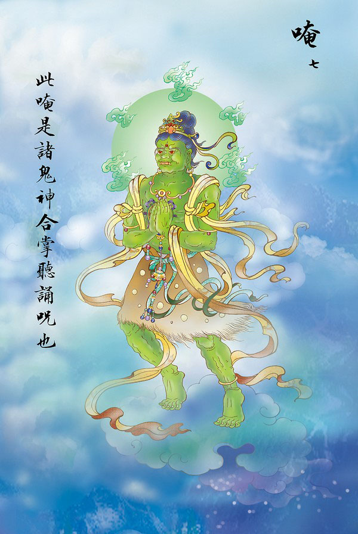
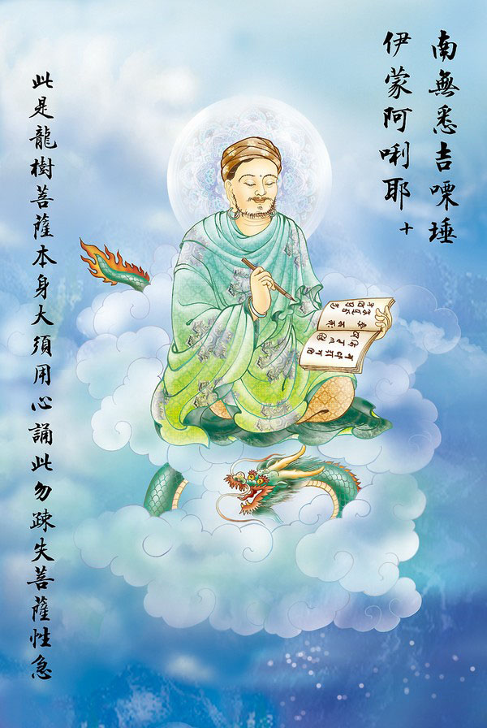
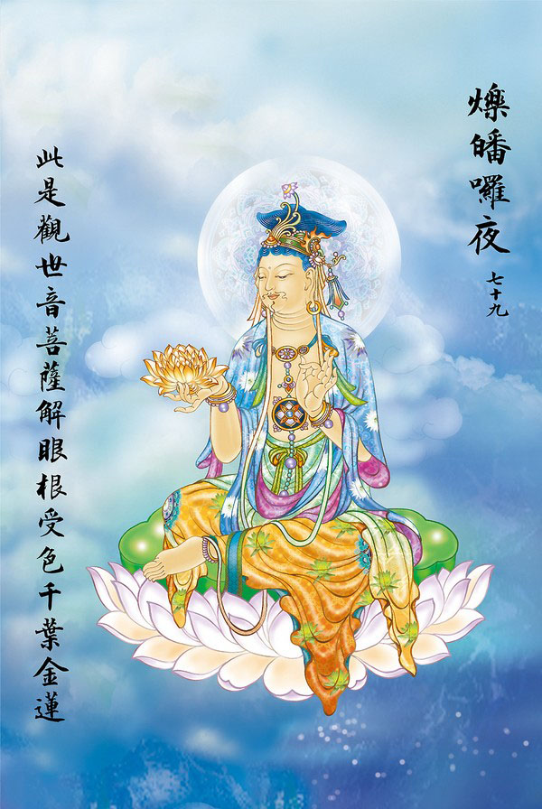

呈现：观世音
1.（南无、喝罗怛那、哆罗夜耶）
【南无】为皈依敬从【喝罗怛那】为宝【哆罗夜耶】为三.【耶】为礼。全句为皈命礼敬十方无尽三宝的意思。
2. （南无、阿唎耶）
【南无】为皈依敬从【阿唎】为圣者或做远离恶法【耶】为礼，全句为礼敬皈依远离恶法的圣者。
3.( 婆卢羯帝、烁钵罗耶)
【婆卢羯帝】为观，光，观察【烁钵罗耶】为观
4.(菩提萨埵婆耶 )
【菩提】为觉【萨埵】为有情【婆耶】为礼，全句为敬礼觉有情。
5.(摩诃萨埵婆耶)
【摩诃】为大，多，胜【萨埵】为勇猛者、有情【婆耶】为礼，全句为礼敬大勇猛者即得
6.(摩诃、迦卢尼迦耶)
【摩诃】为大，多，胜【迦卢】为悲【尼迦】为心【耶】为礼，全句为礼敬大悲

7.(唵)
【唵】皈命，为

8（萨皤罗罚曳)
【萨皤罗】为自在，【罚曳】为圣尊，意为自在圣尊
9.( 数怛那怛写 )
【数怛那】为正教圣妙，或为高尚圣生，妙处圣身，【怛写】为欢言笑语、教诏、咒诏，全句为聪明圣贤加护。

10.(南无、悉吉栗埵、伊蒙阿唎耶)
【南无】为皈命【悉吉栗埵】为
11.(婆卢吉帝、室佛罗愣驮婆)
【婆卢吉帝】为观，【室佛罗】为世音【愣驮婆】为海岛，全句为观自在菩萨行大悲善业处。
12.(南无、那罗谨墀)
【南无】为皈命【那罗】为贤【谨墀】为爱，全句为皈依贤爱慈悲心、恭敬心、无上菩提心。
13.(醯利摩诃、皤哆沙咩)
【醯利】为心，指心的无染者【摩诃、皤哆沙咩】为大光明，长照明，空观心。
14.(萨婆阿他、豆输朋)
【萨】是看见【婆】是平等【阿】是一切法清净，【他、豆输朋】是道法无边全句为利益
15.（阿逝孕）
【阿逝孕】为无比法、无比教，即是卑陋心、无杂心，善者奖励，恶者应即忏悔。
16.( 萨婆萨哆、那摩婆萨哆那摩婆伽)
【萨婆萨哆】是说
17.(摩罚特豆)
【摩罚特豆】为天亲世友，自【萨婆萨哆】到【摩罚特豆】，都是希望菩萨使我天亲世友皆悉成就
18.(怛侄他)
【怛侄他】指咒中的菩萨圣号，悲心、种子、手印、智眼，等诸种法门的真言。
19.( 唵，阿婆卢醯)
【唵】为引导出生【阿婆卢醯】为观音。
20.(卢迦帝)
【卢迦帝】为
21.(迦罗帝)
【迦罗帝】为悲者，救苦难者、兴道义者，解释为道心坚固才能得大智慧。
22.(夷醯唎)
【夷醯唎】为顺教、
23.(摩诃菩提萨埵)
【摩诃】是说佛法广大，人人皆可
24.(萨婆萨婆)
【萨婆】是说佛法平等利乐众生，一切有缘都可得到利乐。
25.(摩罗摩罗)
【摩罗摩罗】为增长、如意、随意。即是指如意珠手眼。
26.（摩醯摩醯、唎驮孕）
【摩醯】与【摩诃】同为即时大自在，又【摩醯】是说

27.（俱卢俱卢、羯蒙）
【俱卢】是发心修道，可感动天神佑护，【羯蒙】是修道人应当植诸功德，以作正果的根基。
28.（度卢度卢、罚闍耶帝）
【度卢】是说修道人要稳定脚跟，一心修持，不为外道所惑，【度卢度卢】是说明而能决，定而能静，【罚闍耶帝】是说广博严峻，能超脱生死苦恼。
29.（摩诃、罚闍耶帝）
【摩诃罚闍耶帝】为道法无边广大，能解脱生死苦恼，不受诸毒所害。

30.（陀罗陀罗）
【陀罗】是说修道人若一尘不起，即可升于诸天，【陀罗陀罗】是说心若太虚，清净自然，即可往生诸梵天。
31.（地唎尼）
【地】是世界，【唎】是一切众生，皆悉度化，【尼】为修道的童贞女。大道不分男女，女子亦可成佛。
32.（室佛罗耶）
【室佛罗耶】意思为自在
33.（遮罗遮罗）
【遮罗】是现忿怒色，【遮罗遮罗】是现大忿怒相，意为法雷一吼，诸行遍空。
34.（摩麼罚摩罗）
【摩】是诸法离我 【摩麼】是说：善可破除恶障灾难【罚摩罗】是道境难测，而其利则无可与比。
35.（穆帝隶）
【穆帝隶】是说闭目澄心默持，意为静心修持。
36.（伊醯伊醯 ）
【伊醯】是说修道人要安分守己，【伊醯伊醯】一切要听其自然。
37.（室那室那）
【室那】道心坚定，生大智慧，【室那室那】修道者可得大智慧。
38.（阿罗参、佛罗
【阿罗参】是说超出法外而为法王，于法自在，【佛罗舍利】：是说修成清净法身得佛珠。
39.（罚沙罚参）
【罚沙】是说修道要忍耐，【罚参】是指成道有真乐，意为要得到真正的快乐，必须要忍耐修持。
40.（佛罗舍耶）
【佛罗舍耶】是说修道人如舍弃贪著，省悟本来面目，即能常与十方诸佛见面。
41.（呼嚧呼嚧摩罗）
【呼嚧】是现神鬼相，【呼嚧呼嚧】是因现神鬼相而降服鬼众，【摩罗】是现
42.(呼嚧呼嚧醯利）
【呼嚧呼嚧醯利】为作法无念，作法自在，意为一切自在。
43.(娑罗娑罗)
【娑罗】意为坚固，【娑罗娑罗】意为不但要坚固，更能永久持续始终不二。
44.(悉唎悉唎)
【悉唎】为利益众生，【悉唎悉唎】为爱护众生而不舍弃。
45.(苏嚧苏嚧)
【苏嚧】意为甘露，【苏嚧苏嚧】意为遍施甘露而能普利众生。
46.（菩提夜、菩提夜)
【菩提夜】为勇猛精进，日夜修行，【菩提夜、菩提夜】自始自终永不退避。
47.（菩驮夜、菩驮夜）
【菩驮夜】为人我一体，无分别心，【菩驮夜、菩驮夜】为无人相、无我相，一切恶道众生皆悉平等。
48.（弥帝唎夜）
【弥帝唎夜】为大量、大慈悲心。
49.（那罗谨墀）
【那罗谨墀】为大慈大悲，善护善顶。
50.（地利瑟尼那）
【地利瑟尼那】为坚利剑。
51.（波夜摩那）
【波夜摩那】是为欢喜的名称，意为成就。
52.（娑婆诃）
意为成就、吉祥、圆寂、息灾、增益、无住等，为真言结语。
53.（悉陀夜）
【悉陀夜】为道法无边，众生要摆脱名利方得成就。
54.（娑婆诃）
【娑婆诃】为修道者若能认识真假，成道则易。
55.（摩诃悉陀夜）
【摩诃悉陀夜】为广大成就，意为佛法广大，凡肯修持，均能成就佛果。
56.（娑婆诃)
【娑婆诃】意为广大无边。
57.(悉陀喻艺)
【悉陀】为成就的利益，【喻艺】为无为
58.(室皤罗耶)
【室皤罗耶】为自在，意为诸天仙女均能成就自在妙道。
59.(娑婆诃)
【娑婆诃】强调督促，无为法性自在成就。

60.(那罗谨墀)
【那罗谨墀】意为贤爱成就。
61.(娑婆诃）
【娑婆诃】再度叮咛，为怕众生落于旁门左道。
62.（摩罗那罗）
【摩罗】为如意，【那罗】为尊上。为修道如意无上坚固。
63.（娑婆诃）
此句【娑婆诃】是连接上文，意为劝人认清真正大道要时时有警觉心。
64.（悉罗僧、阿穆佉耶）
【悉罗僧】为爱护，【阿穆佉耶】为不空，意为爱众和合。
65.（娑婆诃）
【娑婆诃】接上句，圆满慈悲，安乐众生。
66.（娑婆摩诃、阿悉陀夜）
【娑婆】为忍受、善说、善到等，【摩诃】为大乘法，【阿悉陀夜】为无量成就。
67.（娑婆诃）
【娑婆诃】接上句，意为究竟
68.（者吉罗，阿悉陀夜）
【者吉罗】为金刚法之轮降服怨魔，【阿悉陀夜】为无比成就，意为以金刚法宝轮降服怨魔得无比成就。
69.（娑婆诃）
此句为总结上句，意为化导众生，解除怨憎。
70.（波陀摩、羯悉陀夜）
【波陀】为红莲花，【摩、羯】为善胜，【悉陀夜】为悉皆成就。
71.（娑婆诃）
本句总结上句修道要在省察中多用工夫。
72.（那罗谨墀、皤伽罗耶）
【那罗谨墀】为贤守，【皤伽罗耶】为圣尊、观自在。
73.（娑婆诃）
【娑婆诃】接上句众生应真实修持，断诸烦恼。
74.（摩婆利、胜羯罗夜）
【摩婆利】为大勇、英雄，【胜羯罗夜】为生性、本性。意为若皈依本性，大勇之德，皆可成就。
75.（娑婆诃）
【娑婆诃】此句连接上句，菩萨显现大迦叶尊者
76.(南无喝罗怛那、哆罗夜耶)
【南无】为皈依敬从，【喝罗怛那】为宝，【哆罗夜】为三，【耶】为礼。全句为皈命礼敬十方无尽三宝的意思。
77.(南无阿唎耶)
【阿唎】为圣者，【耶】为礼，意为皈依顶礼圣者。
78.（婆罗吉帝）
【婆罗吉帝】是说道法无穷，能修则由清净达于极乐。

79.(烁皤罗夜)
【烁皤罗夜】是说修道人欲成清净法身，先要扫出眼根，色尘。
80.(娑婆诃)
此句【娑婆诃】承接上句，意为修道人需断耳根、声尘。
81.(唵，悉殿都)
【唵】诸咒母，【悉殿都】修道的总枢纽。意为修道要扫除鼻根香尘。
82.(漫多罗)
【漫多罗】为修道人要断灭舌根味尘。
83.(跋陀耶)
【跋陀耶】为随心圆满。意指身为一切
84.(娑婆诃)
【娑婆诃】为完结的意思。本《